| 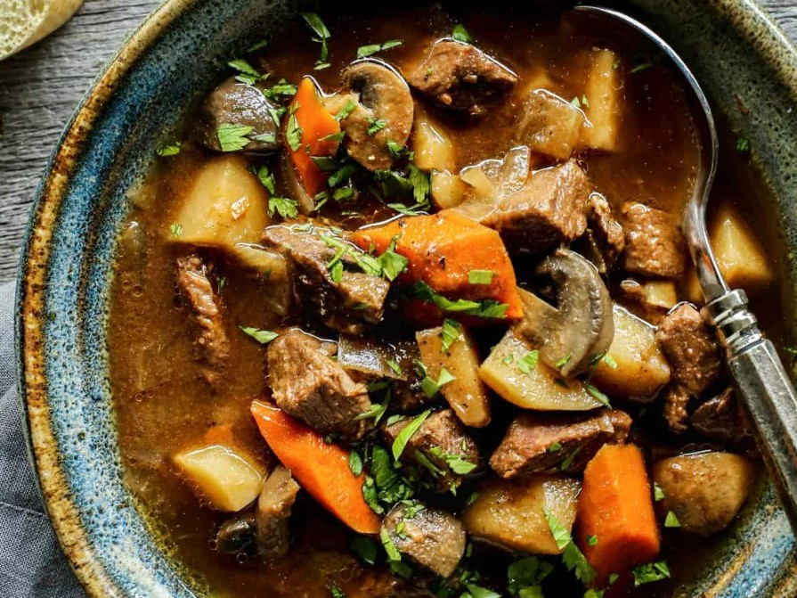 |
Το πιο κλασικό πιάτο της Πράγας είναι αυτό. Και μπορεί η προέλευσή του να είναι Ούγκρικη αλλά στην Τσεχία το τρώνε πάρα πολύ.Είναι ένα ζουμερό μοσχαρίσιο στιφάδο που συνοδεύεται με houskové Knedlíky. |
| 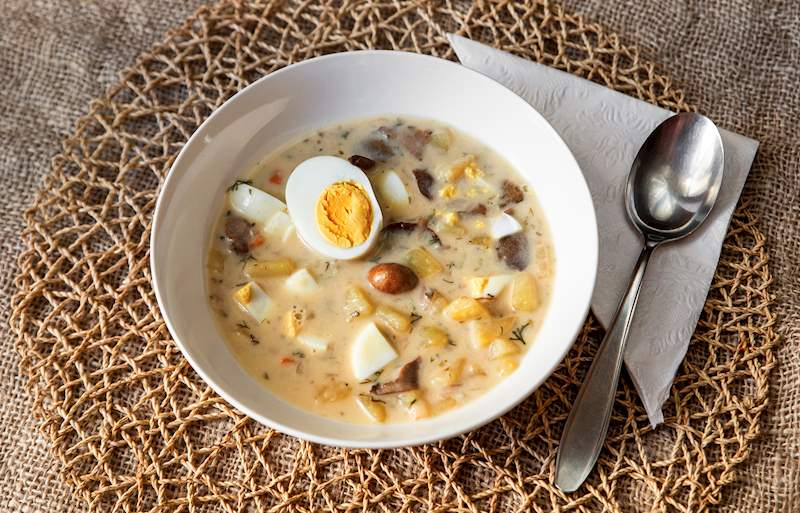 | Οι Τσέχοι αγαπούν τις σούπες γι’αυτό άλλωστε και η τσέχικη κουζίνα έχει αρκετές συνταγές για σούπες. Η σούπα Kulajda όμως ξεχωρίζει. Είναι σούπα με πατάτες, μανιτάρια του δάσους, κρέμα, άνηθο και γαρνιτούρα αυγά ποσέ. |
| 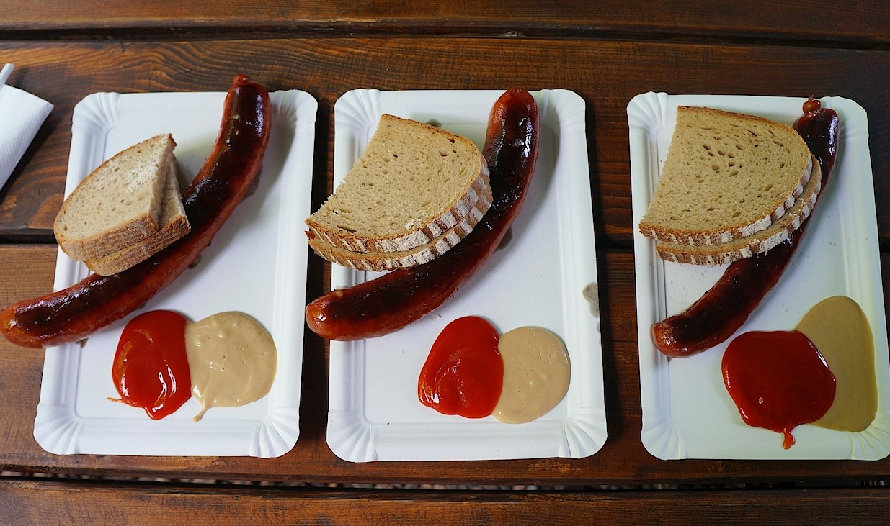 |
Το πιο λαχταριστό λουκάνικο που έχετε δοκιμάσει! Έχει κέτσαπ, μουστάρδα, βραστό λουκάνικο και το τσέχικο ψωμάκι rohlík. Σαν το hot dog, απλώς σε παραδοσιακό τσέχικο ψωμί. Το βρίσκετε σε όλους τους δρόμους της Πράγας, απλά ψάξτε να βρείτε ένα καλό πωλητή hot dog για να είστε σίγουροι για το τι θα φάτε. |
| 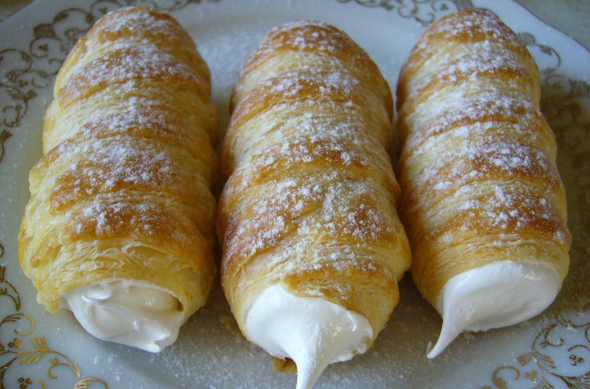 |
Μπορεί να μην είναι εύκολο να το προφέρεις, όμως η γεύση του θα σε αποζημιώσει. Θα το βρεις σε κάθε γωνιά της πόλης. Στην ουσία το trdelnik είναι ένα γλυκό ψωμί, που θυμίζει χωνάκι παγωτού και μπορεί να το γεμίσεις με ό,τι γεύση θέλεις. Από σοκολάτα και σαντιγί με φρούτα έως χρωματιστή ζάχαρη και παγωτό. Προτίμησε το ζαχαροπλαστείο Good Food Coffee and Bakery (Karlova 160/8) και απόλαυσε τη βόλτα σου στη Πράγα πιο γλυκά. |
| 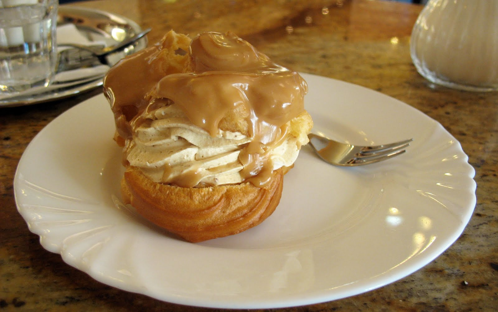 |
Για πολλούς αποτελεί το βασιλικό γλυκό της Πράγας. Στην ουσία πρόκειται για ένα γλυκό –ύμνο στη βανίλια, αφού αποτελείται από μια ζύμη από βανίλια με γέμιση βανίλια και καραμέλα. Στην πρώτη μπουκιά μπορεί να σου φανεί ένα ελαφρύ γλυκό, όμως δύσκολα θα καταφέρεις να το φας ολόκληρο χωρίς να φουσκώσεις. Τα καλύτερα Vetrnik θα τα βρεις στο Café Savoy (Vítězná 124/5). |
| 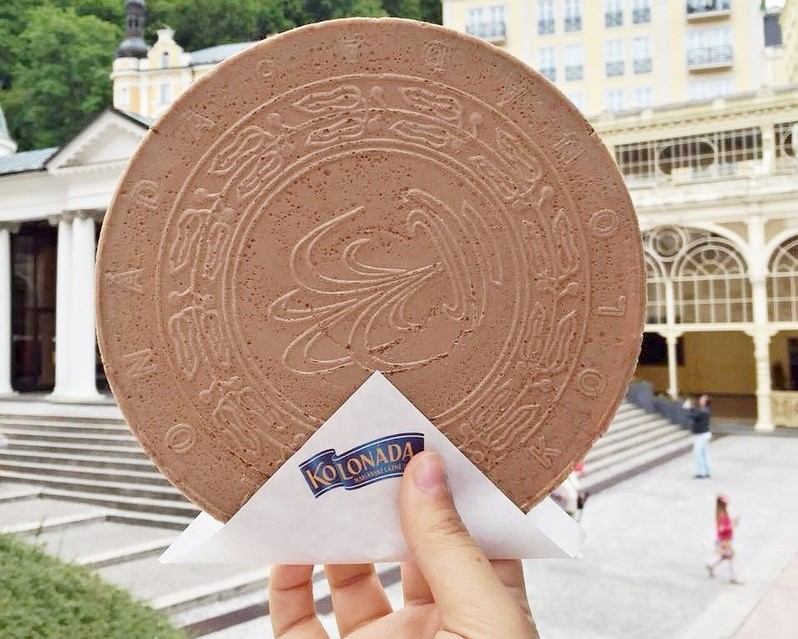 |
Η ιστορία των παραδοσιακών γκοφρετών σπα της Τσεχίας (lazenske oplatky) πηγαίνει πίσω στο 1856, όταν ο Karel Reitenberger ξεκίνησε την παραγωγή τους σε μεγάλη κλίμακα. Η γεύση τους και το σχήμα τους δεν έχουν αλλάξει από τότε. Οι γκοφρέτες καλύπτονται με μείγμα φουντουκιών, βανίλια, κανέλα και ζάχαρη και δημιουργείται η παραδοσιακή τσέχικη σπεσιαλιτέ. |
| 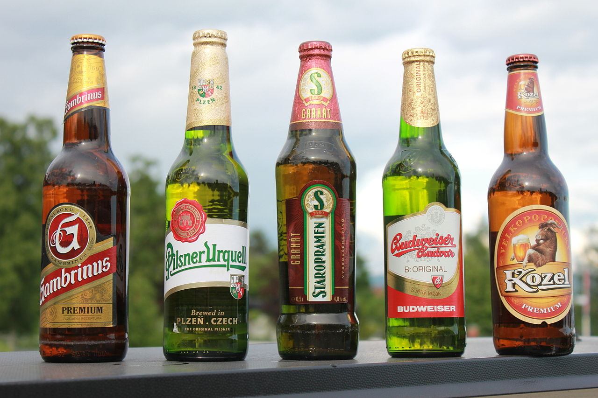 |
Το πλούσιο τσέχικο φαγητό απαιτεί πλούσιο ποτό και η τσέχικη μπύρα θεωρείτε ως η καλύτερη στον κόσμο. Δύο από τις πιο διάσημες ετικέτες είναι η Pilsner Urguell και η Budwieser Budvar. |
| 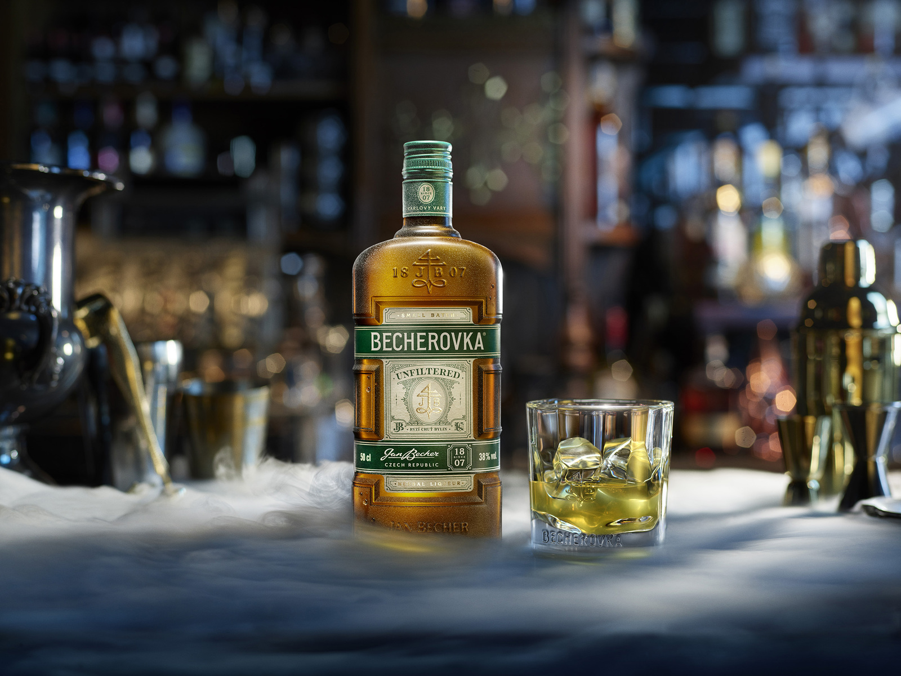 |
Ο Jan Becher παράγει αυτό το ποτό, σύμφωνα με μία παραδοσιακή μυστική συνταγή χωρίς προσθήκη χημικών συντηρητικών ή τεχνητά χρώματα για πάνω από 200 χρόνια. Η Becherovka είναι γνωστή ως η 13η πηγή στα ιαματικά λουτρά στο Karlovy Vary.Σήμερα η Becherovka σερβίρετε είτε κρύα είτε ως μέρος ανάμειξης διάφορων ποτών. Η πιο γνωστή είναι με τόνικ, η οποία ονομάζεται Beton. |
| 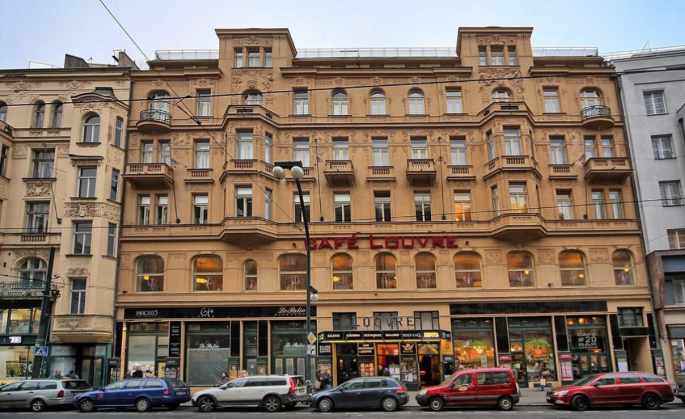 | 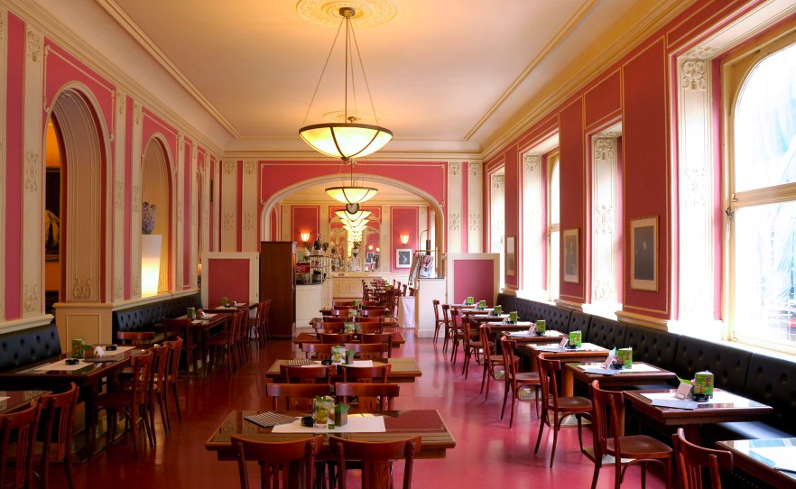 |
Ένα από τα παλαιότερα κλασικά καφέ της Πράγας, από την εποχή της... Αυστροουγγαρίας.
Στο ίδιο μέρος από το 1902, έχει δεχθεί αμέτρητους διάσημους επισκέπτες, ιστορικά πρόσωπα, καλλιτέχνες, πολιτικούς και επισκέπτες απ’ όλο τον κόσμο. Ανάμεσά τους ένας από τους διασημότερους πολίτες της Πράγας, ο Φραντς Κάφκα.
Διεύθυνση: Narodni 22
Περιοχή: όρια Νέας & Παλιάς Πόλης
Ανοιχτά: Δευτέρα - Παρασκευή: 8:00 - 23:30, Σαββάτο & Κυριακή: 9:00 - 23:30
Mπορείτε να επισκεφθείτε εδώ τον επίσημο ιστότοπο του Cafe Louvre.
| 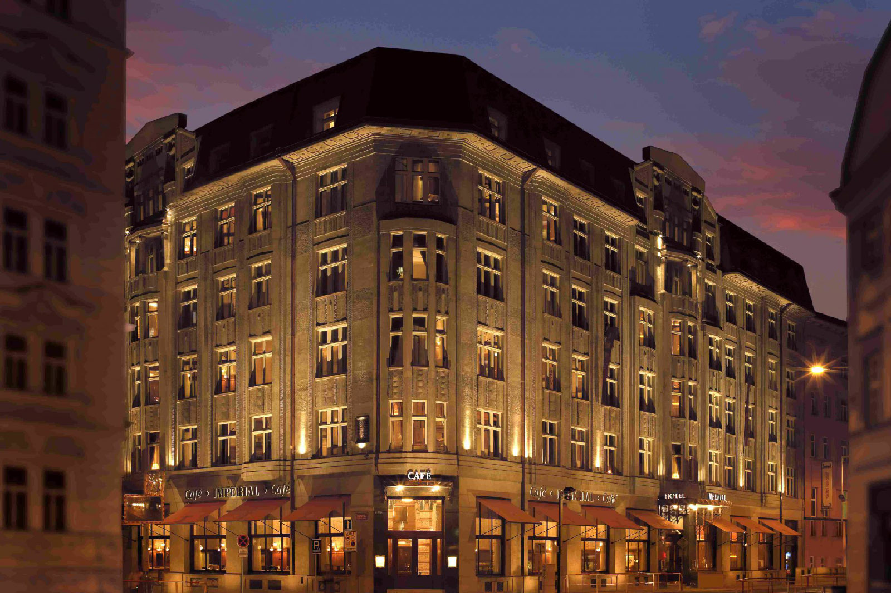 | 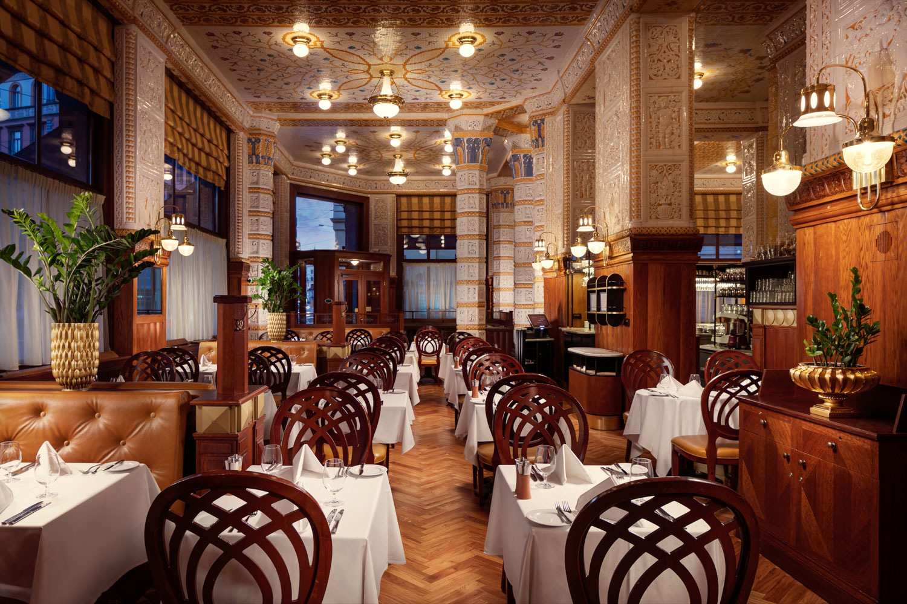 |
Αυτό το εστιατόριο αξίζει, για το αριστοκρατικό περιβάλλον του, το ιστορικό ντεκόρ του και για το εξαιρετικό φαγητό του . Ό,τι δοκιμάσετε, είναι καλομαγειρεμένο και νόστιμο η εξυπηρέτηση άμεση και το προσωπικό ευγενικό!
Διεύθυνση: Na porici 1072/15 Prague 1
Ανοιχτό: 07:00 π.μ. - 11:00 μ.μ.
Mπορείτε να επισκεφθείτε εδώ τον επίσημο ιστότοπο του Cafe Imperial.
| 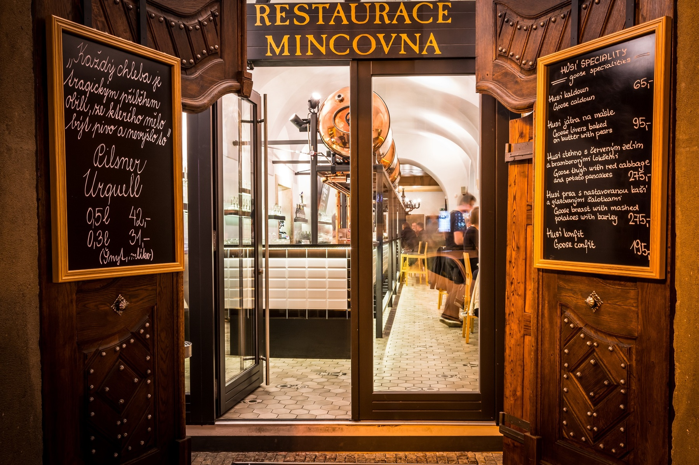 | 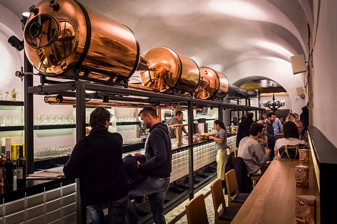 |
Στο χώρο ενός παλιού νομισματοκοπείου από το 18ο & 19ο αιώνα στην καρδιά του ιστορικού κέντρου, στην Πλατεία της Παλιάς Πόλης, θα βρείτε το εστιατόριο Mincovna, που σημαίνει... νομισματοκοπείο.
Παραδοσιακές τσέχικες συνταγές με νότες μοντέρνας κουζίνας, τσέχικο κρασί και φυσικά μπύρα, σας περιμένουν να τα απολαύσετε.
Διεύθυνση: Staromestske namesti 7
Περιοχή: Παλιά Πόλη
Ανοιχτά: καθημερινά 11:00 – 24:00
Mπορείτε να επισκεφθείτε εδώ τον επίσημο ιστότοπο του restaurace Mincovna.
| 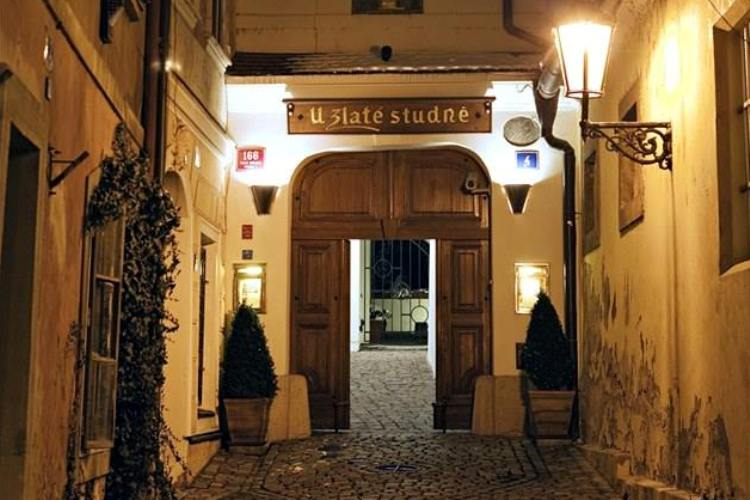 | 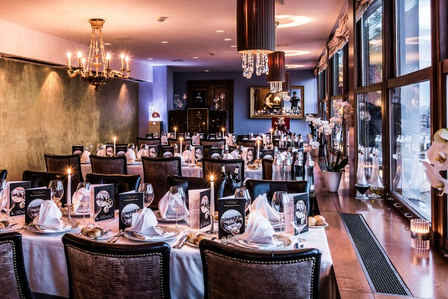 |
Πολυτελές εστιατόριο με καταπληκτική θέα και θεσπέσιο φαγητό. Με πολλά βραβεία για την ποιότητά του και το σέρβις του, θα ικανοποιήσει και τον πιο απαιτητικό επισκέπτη.
Διεύθυνση: U Zlate Studne 4
Περιοχή: Μικρή Πόλη
Ανοιχτά:
1/4-31/10 (η ταράτσα του εστιατορίου είναι ανοιχτή): καθημερινά, 11:00 - 16:00 και 18:00 - 23:00
1/11-31/3 (μόνο ο εσωτερικός χώρος λειτουργεί, με θέα την πόλη της Πράγας): καθημερινά, 12:00 - 23:00
Μπαρ: το μπαρ μένει ανοιχτό μέχρι τις 24:00
Mπορείτε να επισκεφθείτε εδώ τον επίσημο ιστότοπο του Terasa u Zlate Studne.
| 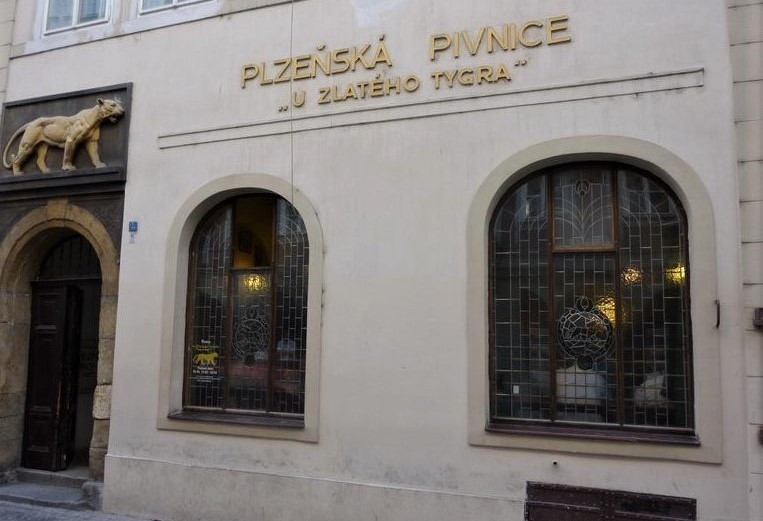 | 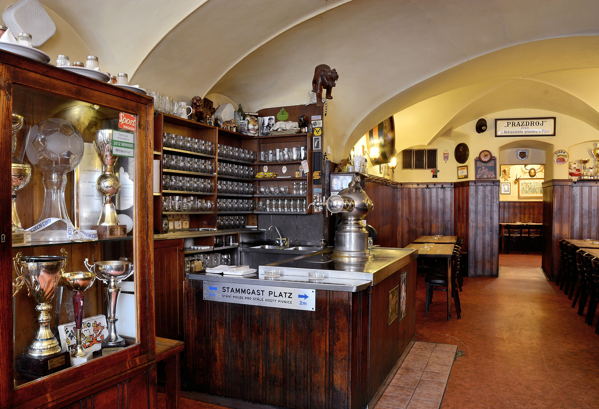 |
Κάθε τουρίστας που θέλει να νιώσει την αίσθηση μιας κλασικής Τσέχικης μπυραρίας πρέπει να την επισκεφθεί .Τέλεια μπύρα, εκπληκτική περίοδο παραδοσιακό εσωτερικό, τοπικό μενού τροφίμων απλής ποιότητας. Εξαιρετικό μέρος για να επισκεφτείτε, υπέροχη εμπειρία για μια παραδοσιακή παμπ.
Διεύθυνση: Husova 228/17 Prague 1
Ανοιχτά: 3:00 μ.μ. - 11:00 μ.μ.
Mπορείτε να επισκεφθείτε εδώ τον επίσημο ιστότοπο του U Zlateho Tygra.
| 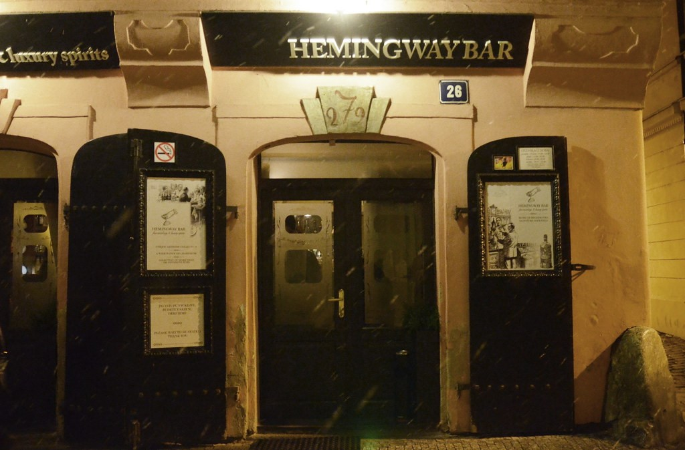 | 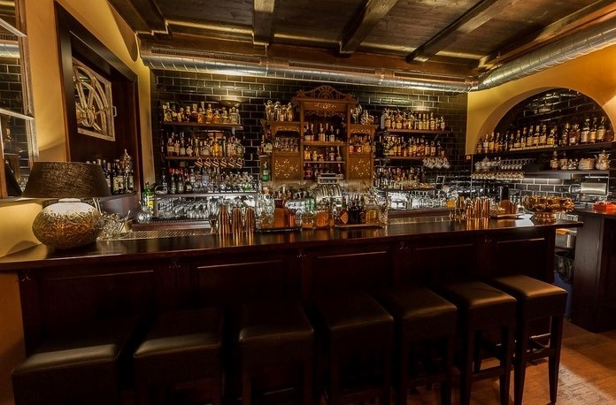 |
Υψηλού επιπέδου και αισθητικής μπάρ, εμπνευσμένο από τον Ernest Hemingway και τα αγαπημένα του ποτά, το αψέντι, το ρούμι και τη σαμπάνια.
Πολλά κοκτέιλ, ακόμη και στα μέτρα σας. Για πότες και γνώστες!
Διεύθυνση: Karoliny Svetle 26
Περιοχή: Παλιά Πόλη
Ανοιχτά: Δευτέρα – Πέμπτη: 17:00 - 1:00, Παρασκευή: 17:00 - 2:00, Σαββάτο: 19:00 - 2:00, Κυριακή: 19:00 - 1:00
Mπορείτε να επισκεφθείτε εδώ τον επίσημο ιστότοπο του Hemingway.